<h1>Bregman spheres</h1>

<ul>
<li>Space of Bregman spheres: Boissonnat, Jean-Daniel, Frank Nielsen, and Richard Nock. 
<A HREF="https://hal.archives-ouvertes.fr/hal-00488441/document" target="_blanket">Bregman Voronoi diagrams</A>, Discrete and Computational Geometry 44.2 (2010): 281-307.

<li>Closed-form parameterizations of Bregman spheres for the (extended) Kullback-Leibler divergence and the Itakura-Saito divergence:
<A HREF="https://arxiv.org/abs/1910.03935" target="_blanket">On geodesic triangles with right angles in a dually flat space</A>
</ul>
Browse below for examples in PNG/PDF.<BR>
<center>
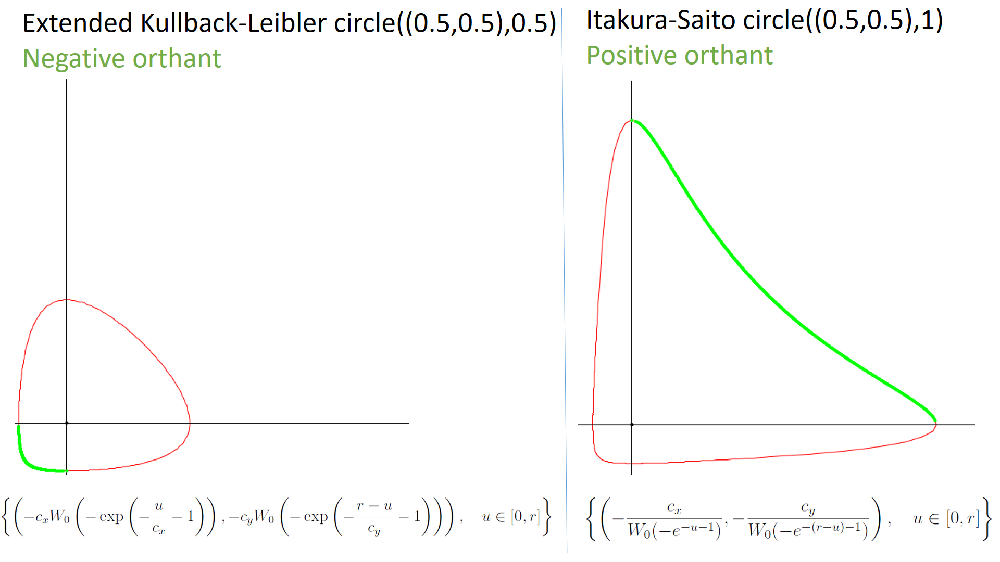<BR>
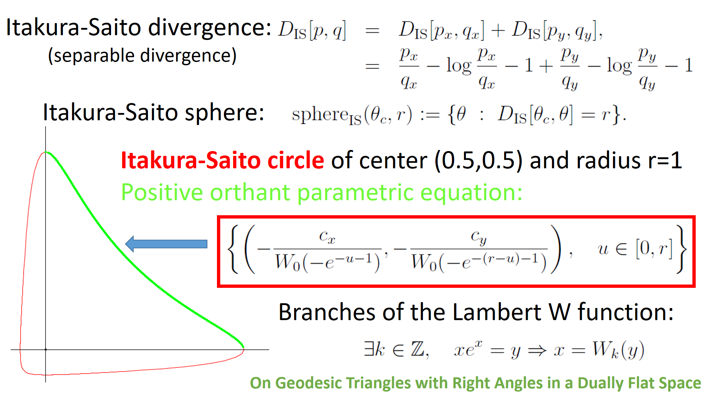
</center>

<hr>
Click on the image to open in a new tab the PDF file
</hr>

<table>
    <thead>
        <tr>
            <th colspan="2">Bregman sphere</th>
        </tr>
    </thead>
    <tbody>
        <tr>
            <td>Kullback-Leibler divergence</td>
            <td>Itakura-Saito divergence</td>
        </tr>
		
		<tr>
            <td><A HREF="eKLCircle-1.pdf" target="_blanket">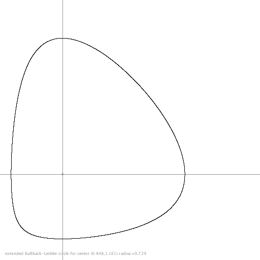</A></td>
            <td><A HREF="ItakuraSaitoCircle-1.pdf" target="_blanket">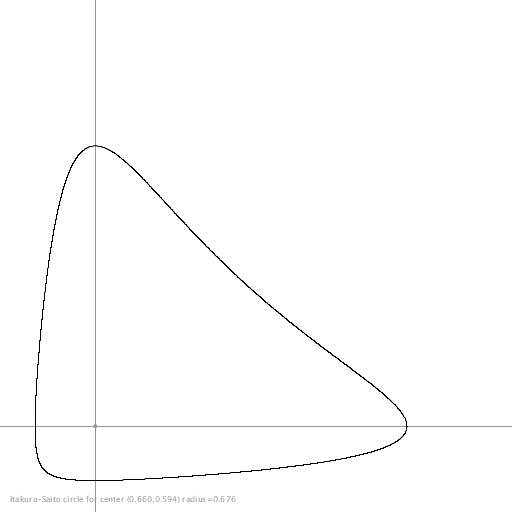</A></td>
        </tr>
		
		<tr>
            <td><A HREF="eKLCircle-2.pdf" target="_blanket">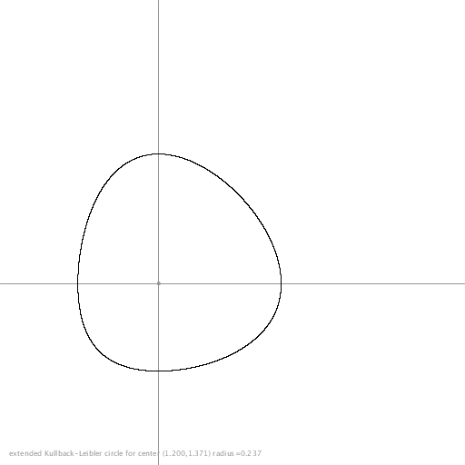</A></td>
            <td><A HREF="ItakuraSaitoCircle-2.pdf" target="_blanket">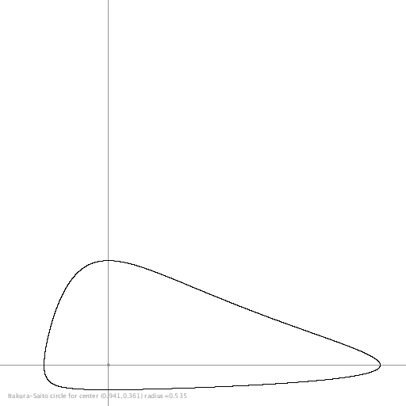</A></td>
        </tr>
		
		
		<tr>
            <td><A HREF="eKLCircle-3.pdf" target="_blanket">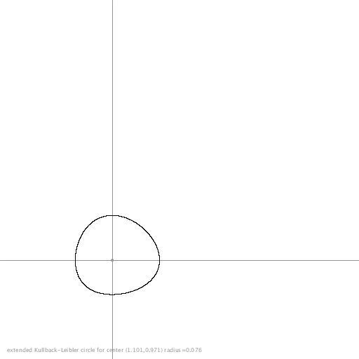</A></td>
            <td><A HREF="ItakuraSaitoCircle-3.pdf" target="_blanket">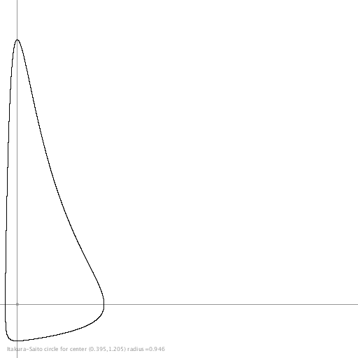</A></td>
        </tr>
		
		
		<tr>
            <td><A HREF="eKLCircle-4.pdf" target="_blanket">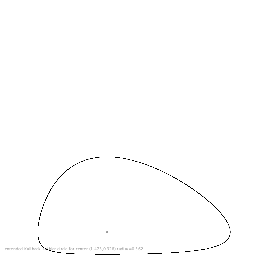</A></td>
            <td><A HREF="ItakuraSaitoCircle-4.pdf" target="_blanket">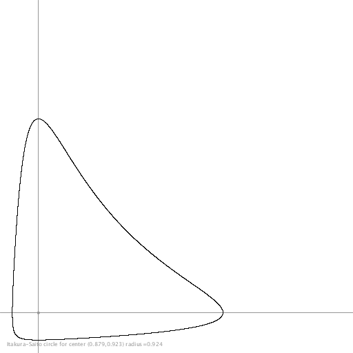</A></td>
        </tr>
		
		
		<tr>
            <td><A HREF="eKLCircle-5.pdf" target="_blanket">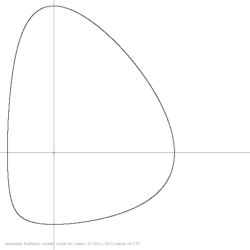</A></td>
            <td><A HREF="ItakuraSaitoCircle-5.pdf" target="_blanket">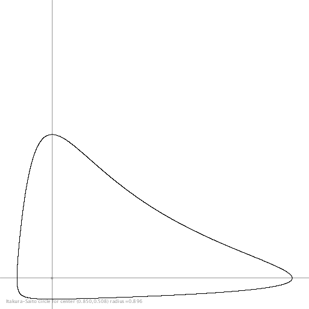</A></td>
        </tr>
		
    </tbody>
</table>

<hr>
May 2021, Frank Nielsen.
